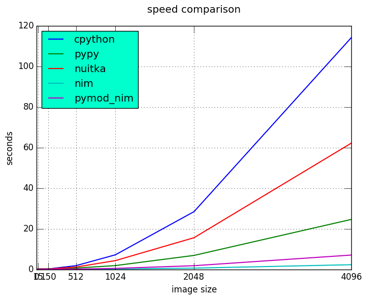
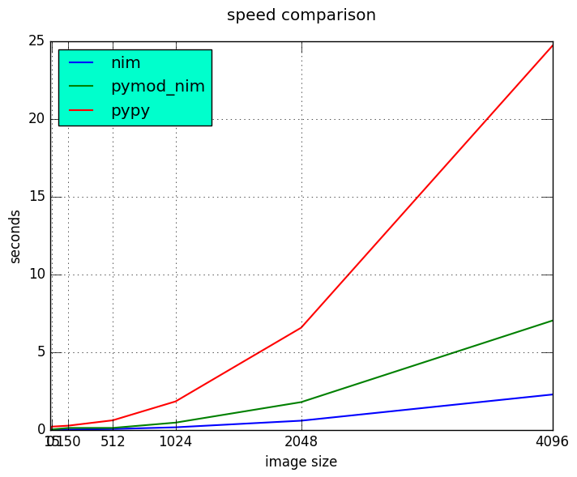
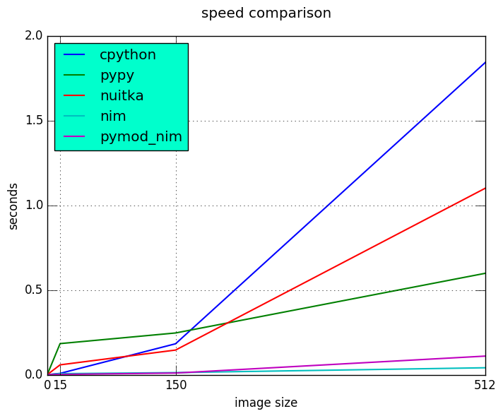

Bonta Sergiu Vlad
Email/contact: bonta.vlad@gmail.com or just google my name
Web developer for about 3 years(it's less then 3 but not by much)
Me knows mostly Python and Javascript
“Do I really look like a guy with a plan? You know what I am? I'm a dog chasing cars. I wouldn't know what to do with one if I caught it! You know, I just… do things.”
― The Joker - Heath Ledger
"Every Fairy Tale Needs A Good Old Fashioned Villain"
We have around 1000 Truevision images that we want to open, fill the first 5 pixels with red color(simulate a watermark?) and finally save it.
It's a batch process
Each delay will add up!
Image sizes: 15, 150, 512, 1024, 2048 and 4096 pixels wide.
Often referred to as targa: raster graphics format.
Why tga?
| header | pixel data | footer |
|---|---|---|
| id length | RLE | Extension offset |
| … | or | … |
| image specifications | no compression | Signature |
Pixel structure:
lossless data compression
A hypothetical scan line, with B - black pixel and W - white:
WWWWBBBWWBBBBBBW
With a run-length encoding (RLE):
4W3B2W6B1W
Now that we know our "villain" how can we overcome it?
Maybe we can "cheat"!
We do not strive for the fastest implementation, we strive for "good enough" with minimal, preferably none, development time
The hero we need, the hero we want(well most of the time at least)!
The slowest implementation, but good reference point
Serves as blueprint for the Nim implementation
class TGAHeader(object): def __init__(self): self.id_length = 0 self.color_map_type = 0 self.image_type = 0 # ... class TGAFooter(object): def __init__(self): self.extension_area_offset = 0 self.developer_directory_offset = 0 self.signature = "TRUEVISION-XFILE" # ...
class Image(object): def __init__(self): self._header = TGAHeader() self._footer = TGAFooter() self._pixels = [] def load(self, file_name): pass # ... def save(self, file_name, original_format=False, force_16_bit=False, compress=False): pass # ... @staticmethod def _encode(row): """Econde a row of pixels. This function is a generator used during the compression phase. More information on packets generated are after returns section.""" pass # ...
Nuitka is a Python compiler. It's fully compatible with Python 2.7 .. 3.4.
You feed it your Python app, it does a lot of clever things, and spits out an executable or extension module.
If interpreting things is slow, why not compile it? Sounds crazy? think again!
nuitka --recurse-all program.py and you are set. recurse-all option will transverse the dependencies tree and compile them to, one by one.
With a few annotations, array-oriented and math-heavy Python code can be made to be similar in performance to C, C++ and Fortran.
Numba works by generating optimized machine code using the LLVM compiler.
Compilation can run on either CPU or GPU hardware, integrates well with Python scientific software stack.
# Taken directly from the project home page from numba import jit from numpy import arange # jit decorator tells Numba to compile this function. # The argument types will be inferred by Numba when function is called. @jit def sum2d(arr): M, N = arr.shape result = 0.0 for i in range(M): for j in range(N): result += arr[i,j] return result a = arange(9).reshape(3,3) print(sum2d(a))
The following Python language features are not currently supported:
try .. except, try .. finally)with statement)list, dict, set or generator comprehensions)yield from)PyPy is a fast, compliant alternative implementation of the Python language (2.7.12 and 3.3.5). It has several advantages and distinct features, speed, memory usage, compatibility, stackless
Get a huge speed improvement by just replacing python with pypy
eg: pypy program.py. To good to be true? Yes, yes it is!
Two things: warmup time and incompatibility with all those good python modules written with the help of C.
Nim (formerly known as "Nimrod") is a statically typed, imperative programming language that tries to give the programmer ultimate power without compromises on runtime efficiency. This means it focuses on compile-time mechanisms in all their various forms.
## Compile this Nim module using the following command: ## python path/to/pmgen.py greeting.nim ## Taken directly from the projects README import strutils # `%` operator import pymod import pymodpkg/docstrings proc greet*(audience: string): string {.exportpy.} = docstring"""Greet the specified audience with a familiar greeting. The string returned will be a greeting directed specifically at that audience. """ return "Hello, $1!" % audience initPyModule("hw", greet)
>>> import hw
>>> hw.greet
<built-in function greet>
>>> hw.greet("World")
'Hello, World!'
>>> help(hw.greet)
Help on built-in function greet in module hw:
greet(...)
greet(audience: str) -> (str)
Parameters
----------
audience : str -> string
Returns
-------
out : (str) <- (string)
Greet the specified audience with a familiar greeting.
The string returned will be a greeting directed specifically at that audience.
>>>
The following Nim types are currently supported by Pymod:
| Type family | Nim types | Python2 type | Python3 type |
|---|---|---|---|
| floating-point | `float`, `float32`, `float64`, `cfloat`, `cdouble` | `float` | `float` |
| signed integer | `int`, `int16`, `int32`, `int64`, `cshort`, `cint`, `clong` | `int` | `int` |
| unsigned integer | `uint`, `uint8`, `uint16`, `uint32`, `uint64`, `cushort`, `cuint`, `culong`, `byte` | `int` | `int` |
| non-unicode character | `char`, `cchar` | `str` | `bytes` |
| string | `string` | `str` | `str` |
| Numpy array | `ptr PyArrayObject` | `numpy.ndarray` | `numpy.ndarray` |
| Type family | Nim types | Python2 type | Python3 type |
|---|---|---|---|
| signed integer | `int8` | `int` | `int` |
| boolean | `bool` | `bool` | `bool` |
| unicode code point (character) | `unicode.Rune` | `unicode` | `str` |
| non-unicode character sequence | `seq[char]` | `str` | `bytes` |
| unicode code point sequence | `seq[unicode.Rune]` | `unicode` | `str` |
| sequence of a single type T | `seq[T]` | `list` | `list` |
Original blog post here: http://akehrer.github.io/posts/connecting-nim-to-python/
# median_test.nim proc median*(x: openArray[float]): float {. exportc, dynlib .} = ## Computes the median of the elements in `x`. ## If `x` is empty, NaN is returned. if x.len == 0: return NAN var sx = @x # convert to a sequence since sort() won't take an openArray sx.sort(system.cmp[float]) if sx.len mod 2 == 0: var n1 = sx[(sx.len - 1) div 2] var n2 = sx[sx.len div 2] result = (n1 + n2) / 2.0 else: result = sx[(sx.len - 1) div 2]
from ctypes import * def main(): test_lib = CDLL('median_test') # Function parameter types test_lib.median.argtypes = [POINTER(c_double), c_int] # Function return types test_lib.median.restype = c_double # Calc some numbers nums = [1.0, 2.0, 3.0, 4.0, 5.0, 6.0, 7.0, 8.0] nums_arr = (c_double * len(nums))() for i,v in enumerate(nums): nums_arr[i] = c_double(v) med_res = test_lib.median(nums_arr, c_int(len(nums_arr))) print('The median of %s is: %f'%(nums, med_res)) if __name__ == '__main__': main()
$nim c -d:release --app:lib median_test.nim $python median.py The median of [1.0, 2.0, 3.0, 4.0, 5.0, 6.0, 7.0, 8.0] is: 4.500000
nim c --app:lib --header median_test.nim
The --header option will produce a C header file in the nimcache folder where the module is compiled.
#ifndef __median_test__ #define __median_test__ #define NIM_INTBITS 32 #include "nimbase.h" N_NOCONV(void, signalHandler)(int sig); N_NIMCALL(NI, getRefcount)(void* p); N_LIB_IMPORT N_CDECL(NF, median)(NF* x, NI xLen0); N_LIB_IMPORT N_CDECL(void, NimMain)(void); #endif /* __median_test__ */
# ... proc loads*(filename: string): tuple[header, footer: string, pixels: ptr PyArrayObject] {.exportpy, returnDict.}= let image = newImage(filename) let shape = getShape(image.header) # pixel shape: 1, 3 or 4 values result.header = $$image.header result.footer = $$image.footer # create a numpy array [[...shape], [...shape]] result.pixels = createSimpleNew([image.pixels.high, shape], np_uint8) # fill them with zeroes to get rid of random values doFILLWBYTE(result.pixels, 0) var i = 0 for mval in result.pixels.accessFlat(uint8).mitems: # Forward-iterate through the array. mval = image.pixels[i div shape][i mod shape] inc(i)
proc saves*(header, footer: string, pixels: ptr PyArrayObject, filename: string, compress: int) {.discardable, exportpy.}= var image = newImage(to[Header](header), to[Footer](footer)) i = 0 let shape = pixels.strides[0] var pixel_data = newSeq[uint](shape) for v in pixels.accessFlat(uint8).items: pixel_data[i] = v if i == shape - 1: image.pixels.add(newPixel(pixel_data)) pixel_data = newSeq[uint](shape) i = -1 inc(i) image.save(filename, compress.bool) initPyModule("_ntga", loads, saves)
# ... class Image(object): def __init__(self, filename): _data = _ntga.loads(filename) self._header = json.loads(_data["header"]) self._footer = json.loads(_data["footer"]) for section in [self._header, self._footer]: for k, v in section.items(): setattr(self, k, v) self.pixels = _data["pixels"] def save(self, filename, compress=False): for section in [self._header, self._footer]: for k in section: section[k] = getattr(self, k) _ntga.saves(json.dumps(self._header), json.dumps(self._footer), self.pixels, filename, int(compress))
@property def pixel_size(self): if self._header['image_type'] in [3, 11]: return 1 elif self._header['image_type'] in [2, 10]: if self._header['pixel_depth'] == 16 or self._header['pixel_depth'] == 24: return 3 elif self._header['pixel_depth'] == 32: return 4 else: raise ValueError("Invalid pixel depth") else: raise ValueError("Invalid pixel depth")
def main(image_path=None): image_path = image_path if image_path else sys.argv[1] image = Image(image_path) for i in range(5): image.pixels[i] = pixel image.save("dump.tga", compress=True) if __name__ == "__main__": main()
import os from subprocess import call BASE_PATH = os.path.join(os.getcwd(), 'images') def st_time(func): from functools import wraps import time @wraps(func) def st_func(*args, **kwargs): t1 = time.time() func(*args, **kwargs) t2 = time.time() return t2 - t1 return st_func @st_time def cpython(image_path): from pyTGA.measure import main return main(image_path) @st_time def pypy(image_path): return call(["pypy", "pyTGA/measure.py", image_path]) # ...
# start the x axis at 0 x = [0, 15, 150, 512, 1024, 2048, 4096] tests = [cpython, pypy, nuitka, nim, pymod_nim] images = ["pie_15_11.tga", "pie_150_113.tga", "pie_512_384.tga", "pie_1024_768.tga", "pie_2048_1536.tga", "pie_4096_3072.tga"] for t in tests: res = [0, ] # 0 because we want to start from the same point on both axis for image in images: image_path = os.path.join(BASE_PATH, image) # res will be ploted with matplotlib res.append(t(image_path)) print "benchmarking: {} with size: {}".format(t.__name__, image)



Original talk given by the language creator Andreas Rumpf at OSCON 2015
Similarities and differences.
| Feature | Python | Nim |
|---|---|---|
| Execution model | Virtual Machine, JIT | Machine code via C* |
| Meta-programming | Python (decorators/metaclasses/eval) | Nim (const/when/template/macro) |
| Memory Management | Garbage-collected | Garbage-collected and manual |
| Types | Dynamic | Static |
| Dependent types | - | Partial support |
| Generics | Duck typing | Yes |
| int8/16/32/64 types | No | Yes |
| Bigints (arbitrary size) | Yes (transparently) | Yes (via nimble package) |
| Arrays | Yes | Yes |
| Bounds-checking | Yes | Yes |
| Type inference | Duck typing | Yes (extensive support) |
| Closures | Yes | Yes |
| Operator Overloading | Yes | Yes (on any type) |
| Custom Operators | No | Yes |
| Object-Oriented | Yes | Minimalistic** |
| Methods | Yes | Yes |
| Multi-Methods | No | Yes |
| Exceptions | Yes | Yes |
\*Other backends supported and/or planned \** Can be achieved with macros
Bonta Sergiu Vlad
Email: bonta.vlad@gmail.com
WWW: https://bontavlad.github.io
QR: TODO
Github repo: https://github.com/BontaVlad/nimtga
QR: TODO